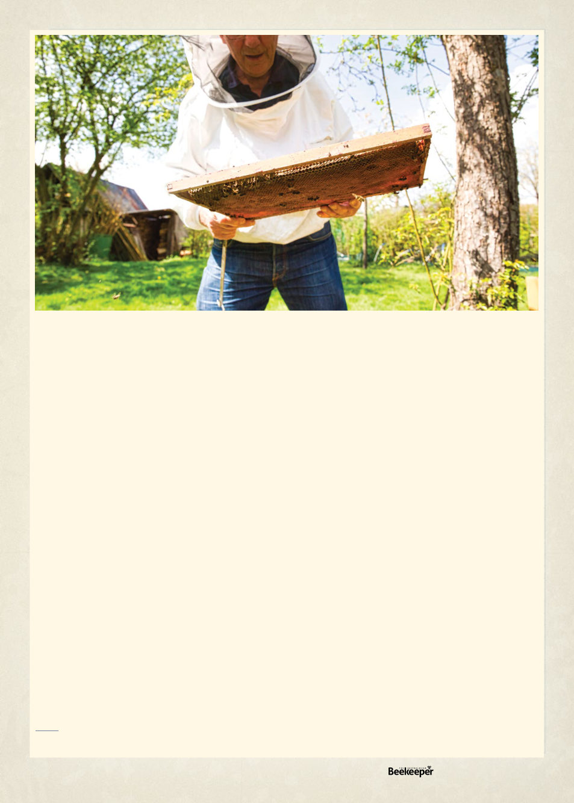

This flow chart I have made starts in the upper left hand
corner and assumes you have just done a mite check and
found yourself over threshold levels (See ABK August 2024).
It does not account for cultural/mechanical means to slow
down or reduce mite numbers (selective breeding, screened
bottom boards, drone frame removal). Drone frame removal
in particular can be a fairly effective chemical free treatment
method1 and would probably be first on the consideration
list but can be time consuming. But, especially if you have
a small number of hives and want to be chemical free you
can go ahead and do it as much as feasible.
In general I organised this flowchart to consider first the
organic options least likely to result in any lasting residues in
the hive, and taking into account other strategic decisions
like saving Bayvarol for last since it’s one of the few things
that can be used with honey supers.
There may be some other “strategic” considerations
that go into the decision, such as the quick knockdown
of FormicPro (see entire article on FormicPro in this issue),
or Apiguard being cheaper on double-brood boxes since
its the same dosage per “hive” rather than per brood
box, so it’s always worthwhile to fully consider everything,
but I anticipate this flow chart might make it slightly less
overwhelming.
Another consideration is that over time some of the
treatments may unfortunately become ineffective as bees
develop resistances, so always perform mite washes at the
end of the treatment to confirm effectiveness, and if you’ve
found or been informed one of the miticides has become
ineffective you can skip it here by choosing the answer on
the chart indicating it was the last thing you used so the flow
chart will take you to the next option.
Otherwise, start in the upper left, the yellow lines are a yes
answer to the question and the blue lines are a no answer
to the question. A few times there will be two yes or two
no options depending on whether or not you have honey
supers on the hive, but they’re labelled and I assume you
can read.
It’s entirely possible there’s a more effective way to organise
this flow chart that doesn’t require re-asking about honey
supers, but I can’t figure it out, if you are a flow chart savant
and can organize this better please please let me know!
You’ll win… public recognition as a genius.
But I want to end by emphatically saying this is merely
a guide to an order of considering the miticides, and in
considering them you must fully read the label and any other
more thorough guides you can find because many of them
have numerous factors to consider.
It’s a bit overwhelming at first, to look at the list of miticides, with all their
particular use conditions, and sort out exactly what to use. In any such case
it’s helpful to come up with an organized manner to go down the list, using
simple “yes,” or “no” ‘questions about conditions to narrow the choices
down to the optimum one. One already exists on the internet at https://
honeybeehealthcoalition.org/varroatool/ but, not being Australia-specific, it
references a number of miticides we do not have available.
1. See “Chemical Free Varroa Control Methods”in our March 2024 issue.
Vol. 126 | No. 02 |
Celebrating 125 years | 21